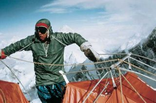
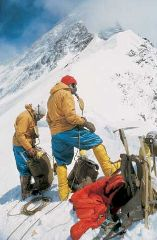
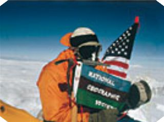
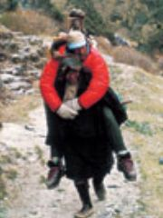

The "You want me to climb that?" Hash
Run #1004.5, July 2, 2005
Hare: Dry Foot Fairy
Location: Rumney Crags, NH.
Weather: 80, clear.
Hounds: Fuwangii, SummersEveSevenYearBitch, and Basket.
Late Cumer: Oozing.
The Climb:
Once started, this Hash had no where to go but crashing downhill.
The way to the beginning of our climb, however full of hope and expectation at the start, was precarious, as we made our way, from the parking lot to the first cliffs. DryFoot led the merry men and woman from the RIH3 to the, first ever, Technical Rock Climb Hash.
Fuwangii, SESYB and Basket followed like lambs to the slaughter, with no hesitation. It was an obvious sign that they had way too much beer the night before, and were in no condition to make major decisions on their own.
The trail to the Parking Lot Cliff was along a soggy well worn path, over rocks, boulders and around trees, going much higher than one need this early in the morning. Luckily, the parking lot cliff was full of people hanging on ropes and dangling precariously off precipice and overhang. It was evident to all of us but our leader, that we’d be unable to climb and live yet another day. Our Hare was not deterred however, and offered to take us to his second choice for today’s climb, ‘the Orange Crush’.
Having been told my testicles were somewhat larger than normal (Dogmeat summer of 1968 on our first date, “They’re HUGE! Not like the other guys I’ve had sex with. More like Oranges than Walnuts.”). I was feeling a bit uncomfortable between my thighs thinking about how that name arrived. Still we pressed on, ever higher, hoping that the wall would be full already and we’d be unable to kill ourselves yet again.
As we made our way to our destination, we passed routes with names like: Juicy Fingers, Slick and Brendan’s Bitches, which seemed more inviting than others named the Skewer and Shishkebob. We finally settled on Orange Surprise. This one was interesting as to get from flat ground to the start, one had to climb out along a razor edge outcropping and stand on the lip over a thirty foot drop, then lunge onto the main wall. Without the aid of ropes or other protection at this point, we all voted to have our Hare make the first leap of faith and connect the ropes to the first fixed pin.
DryFoot chose Fuwangii to be his second and hold his rope. Fuwangii was comfortably clipped into a belay point, as DryFoot made his way to the wall and started the ascent. There was a sigh of relief as he reached the first pin and clipped in. At this point he could only crash his head against the wall, but not fall down between the rocks and die. Pulling the rope behind him, he made his way spectacularly along the route, ever higher, tying in every 10 – 15 feet or so to the next pin.
We were all so impressed with his manly prowess, as we watched him go ever higher. When he reached an over hang that was a bit more difficult, he fell slightly, but Fuwangii held on. Who said he was unreliable?
When he reached the top, we all rejoiced and looked around for a beer to celebrate. The Hare forgot to bring it, so this run rating was starting to go down as quickly as DryFoot repelled to our location.
Fuwangii was next, as he was the next experienced person to try this sport. He had been explaining the technical aspects of climbing to SESYB like Edmond Hillary to Tenzing Norgay on their first attempt. “Just hold onto the rope and everything will be just fine. It’s quite simple really, keep your feet under you and climb higher than you’ve ever been in your life, and don’t look down or worry about falling. I’ll be right here.”
Fuwangii made his way along the knife edge and with the solitude that DF had already done it, started up the wall. He was doing quite well, until he came to the overhang. He tried and tried to find the finger hold DF used to climb over it, but to no avail. Like a girly man squatting to pee, he sat down on his harness and was lowered down by DryFoot. It was sad, especially since DF had already done it, and all of Fuwangii’s experience was now for naught. SESYB and I were sorely disappointed as we stood there looking up at this broken (girly)man.
When Fuwangii finally made the base camp, I clipped into the rope and started my ascent. I felt like a spider making its way along a familiar route. Without hesitation I made the Khumbu Ice Fall, and Camp II to the Lhotse Face, which has now been renamed the Fuwangii Ledge. With the stealth of a gazelle, I reached up into a crack, and pulled myself over the lip. I was standing on Fuwangii Ledge, and I could feel the relief from my fellow climbers below. They knew I would go where Fuwangii failed. Standing on the top, I viewed the world below, and raised our Hash flag next to the US flag.
I made it back safely, and now it was SESYB’s chance to show up the more experienced climber.
As she started to the top, we heard a familiar “Whoohoo, who hoo hoo’s”, from the bottom. It was our long lost sherpa Oozing. He had slept in from a Birthday party the night before and just arrived. Trail Hoover made it up without hesitation, and it appeared to Oozing that this was going to be a cake walk. She made a couple interesting moves with her butt giving us all a wonderful view of nature’s glory, and we enjoyed watching her progress, I’ll say. Finally, making it to the Fuwangii Ledge, she showed more sympathy for Fuwangii than Basket and returned directly to base camp.
Now, Oozing started up, and did so noisily, as his knees kept knocking against one another. He did make it past the Fuwangii Ledge, and condescendingly told Fuwangii it was easy. This of course raised the hairs on the back of Fuwangii’s neck, so he had to make a new attempt to save face.
When Oozing made base camp, Fuwangii didn’t hesitate this time. It was as if he was riding on the back of his sherpa. We watched as he made it up and over the ledge forever etched with his name, and reached to top.
We were ever so proud, and decided to call it a day and get some beer. We considered leaving him up there, but decided we’d be labeled as the team that left trash on the mountain. When he arrived back at base camp, we packed up and made our way back to the lake for a few well earned beers.
On On
Basket